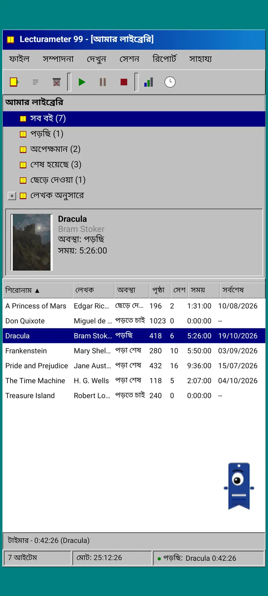
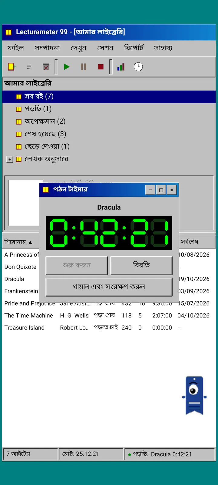
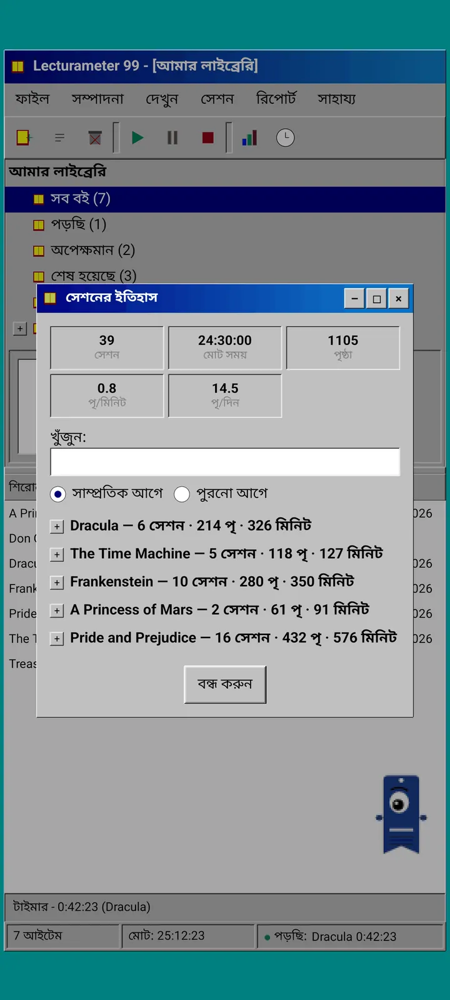
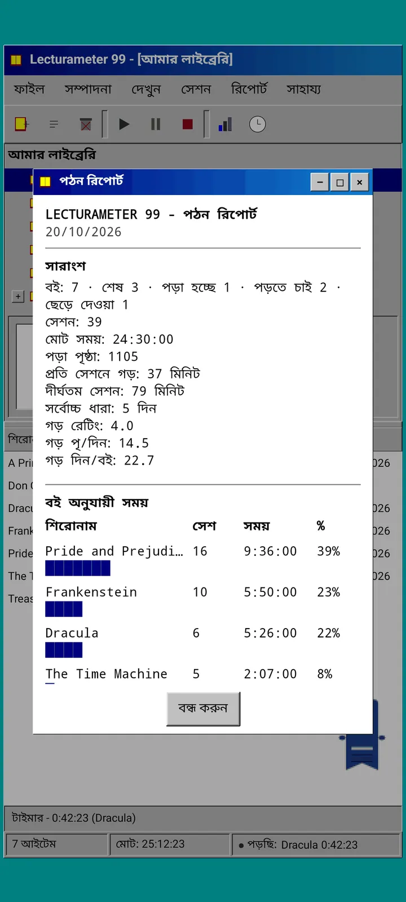
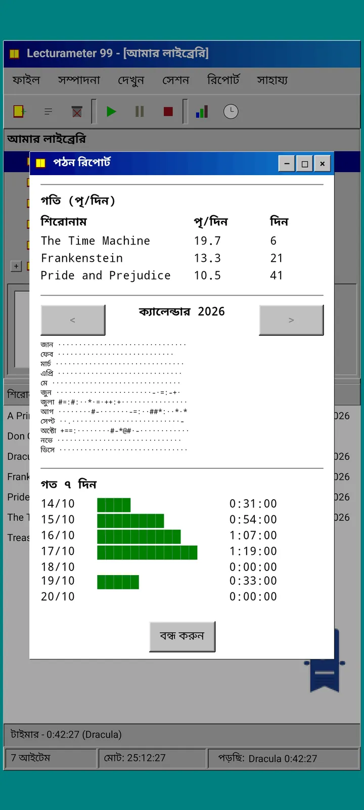

ব্লগ · 2026-09-24
Lecturameter 99, আগে Lecturameter 1999: Lecturameter পুরোনো পিসি প্রোগ্রাম হলে কেমন দেখাত?
উইন্ডো, মেনু, টেবিল ও LCD টাইমারসহ Lecturameter-এর একটি বিকল্প ক্লায়েন্ট, যা আপনার আসল ব্যাকআপ খোলে। কীভাবে তৈরি হলো, কী আছে আর কী ইচ্ছে করেই বাদ। এখন App Store-এ; Google Play শীঘ্রই।
Lecturameter 99 (আগে Lecturameter 1999) কয়েক মাস ধরে তৈরি হচ্ছিল। আমি এটি টুকরো টুকরো করে, এখানে-ওখানে, তাড়াহুড়ো ও পরিকল্পনা ছাড়াই বানিয়েছি। iOS সংস্করণ আমার ভাবনার চেয়ে সহজ আর শেষ করার জায়গা দিচ্ছে দেখার আগে পর্যন্ত আমি এটি নিয়ে গুরুত্ব দিইনি।
এটিই একমাত্র পরীক্ষা নয়। Lecturameter-এর জগতের আরও কিছু প্রজেক্ট আমার মাথায় আছে, কিছু বেশ এগিয়ে গেছে আর কিছু সবে শুরু হয়েছে। এগুলোর বেশিরভাগই সম্ভবত কখনও আলোর মুখ দেখবে না।
এটা কোথা থেকে এলো?
সবকিছু শুরু হয়েছিল একটা পরীক্ষা দিয়ে, যেটার চারপাশে আমি অনেকদিন ধরে ঘুরছিলাম।
ধারণাটা ছিল Lecturameter-কে একদম গোড়া থেকে বেশ কয়েকবার নতুন করে বানানো, সম্পূর্ণ আলাদা নকশার শর্তে। আসল অ্যাপে হাত না দিয়ে এবং সেটির জায়গা নেওয়ার কোনো ইচ্ছে না রেখে। সাতটি সংস্করণ তৈরি হলো। একটি 2016 সালের কোনো Android অ্যাপের অনুকরণ করত, আরেকটি কল্পনা করত 2036 সালে এটি কেমন দেখাবে, আরেকটি লাইব্রেরিকে বইয়ের তাকে বদলে দিয়েছিল যেখানে যত পড়বেন বইয়ের মলাট তত মোটা হয়, আর একটি তৈরি হয়েছিল দুই স্ক্রিনের একটি হ্যান্ডহেল্ড কনসোলের জন্য।
আমার সবচেয়ে ভালো লেগেছিল 1999। নব্বইয়ের দশকের শেষের একটি ডেস্কটপ প্রোগ্রাম: ঘন, কাজের জিনিস, সবকিছু উইন্ডো, মেনু আর টেবিলে। আমি ঠিক করলাম এটি মজা করে ধীরে ধীরে শেষ করব এবং একটি পূর্ণাঙ্গ ক্লায়েন্টে পরিণত করব, যার নিচে থাকবে আসল Lecturameter ডেটা।
এটা কী?
Lecturameter 99 একটি স্বতন্ত্র অ্যাপ, Lecturameter থেকে আলাদা। খুললে আপনি একটি টিল রঙের ডেস্কটপের ওপর একটিমাত্র বড় করা উইন্ডো দেখতে পান। ওপরে টাইটেল বার আর মেনু: ফাইল, সম্পাদনা, দেখুন, সেশন, রিপোর্ট ও সাহায্য। তার নিচে পিক্সেলযুক্ত আইকনের একটি টুলবার। মাঝের অংশ দুই ভাগে ভাগ করা: লাইব্রেরির ট্রি ও প্রচ্ছদসহ প্রিভিউ প্যানেল, আর প্রতিটি বইয়ের জন্য এক সারির একটি টেবিল। একদম নিচে স্ট্যাটাস বার, যেখানে আইটেমের সংখ্যা, মোট সময় আর আপনি যে বইটি পড়ছেন সেটি দেখা যায়।


Lecturameter-এর মতোই একই ডেটা
এই অংশটিই পরীক্ষাটিকে ব্যবহারযোগ্য কিছুতে পরিণত করে। 1999-এর খোলসের নিচে আছে আসল Lecturameter ডেটা মডেল, হুবহু কপি করা: একই বই, একই সেশন, একই স্থিতি, রেটিং আর নোট। এটি যে ব্যাকআপ এক্সপোর্ট করে সেটি Lecturameter যে ফাইল এক্সপোর্ট করে সেটিই, আর যেটি ইমপোর্ট করে সেটিও তা-ই।
বাস্তবে এর মানে হলো আপনি ফাইলে গিয়ে নিজের ব্যাকআপ ইমপোর্ট করতে পারেন এবং আপনার পুরো লাইব্রেরি একটি 1999-এর টেবিলে দেখতে পারেন। এক সপ্তাহ LCD টাইমার নিয়ে পড়ুন। এক্সপোর্ট করুন। নতুন সেশন নিয়ে আধুনিক অ্যাপে ফিরে যান, পথে একটিও ফিল্ড না হারিয়ে। Goodreads CSV-ও ঢোকে আর বেরোয়।
বই খোঁজা Lecturameter-এর মতোই: এটি অ্যাপের নিজস্ব ক্যাটালগ আর Google Books থেকে জিজ্ঞেস করে, এবং শিরোনাম, লেখক, পৃষ্ঠা, ISBN আর প্রচ্ছদ পূরণ করে দেয়। প্রচ্ছদটি পোস্টারাইজ করে স্মুদিং ছাড়া আঁকা হয় যাতে সেটি সেই সময়ের একটি GIF-এর মতো দেখায়।
সেশন, ইতিহাস আর রিপোর্ট
পড়ার প্রবাহ Lecturameter-এরই, উইন্ডোতে রূপান্তরিত। আপনি টেবিলে একটি বই বেছে নেন আর প্লে বোতাম চাপেন। টাইমার উইন্ডো খোলে, কালোর ওপর সবুজ রঙের সাত-সেগমেন্টের একটি ডিসপ্লেসহ। আপনি এটি সরাতে পারেন, টাস্কবারে ছোট করতে পারেন বা বন্ধ করতে পারেন: সময় স্ট্যাটাস বারে গুনতে থাকে।
থামা বোতাম চাপলে সেশন সংরক্ষণের ডায়ালগ খোলে: তারিখ, মিনিট, প্রথম ও শেষ পৃষ্ঠা (বা শতাংশ), মন্তব্য। আপনি সেশনটি পৃষ্ঠা, শতাংশ বা শুধু সময় অনুযায়ী লিখতে পারেন, আর আপনি লেখার সময়ই সারসংক্ষেপ পৃষ্ঠা ও গতি হিসাব করে। বইয়ের শেষ পৃষ্ঠায় পৌঁছালে এটি জিজ্ঞেস করে আপনি শেষ করেছেন কি না। হাতে লেখা সেশন সেশন মেনু থেকে যোগ হয়।
ইতিহাস সেশনগুলোকে বই অনুযায়ী প্লাস-মাইনাসযুক্ত একটি ট্রিতে সাজায়, ওপরে পাঁচটি সংখ্যাসহ: সেশন, মোট সময়, পৃষ্ঠা, প্রতি মিনিটে পৃষ্ঠা এবং প্রতিদিন পৃষ্ঠা। কোনো সেশন সম্পাদনা করতে সেটিতে দুবার ট্যাপ করুন, মুছতে দীর্ঘক্ষণ চেপে ধরুন।
পরিসংখ্যান হলো মনোস্পেসড লেখায় একটি পড়ার রিপোর্ট, যেন প্রিন্টার থেকে বেরিয়েছে: সবচেয়ে লম্বা স্ট্রিক আর গড় রেটিংসহ একটি সারাংশ, ব্লক বারসহ প্রতিটি বইয়ে ব্যয় হওয়া সময়, প্রতিদিন পৃষ্ঠায় গতি, প্রতিদিন পড়া পৃষ্ঠা অনুযায়ী অক্ষর দিয়ে আঁকা বছরের ক্যালেন্ডার, এবং শেষ সাত দিন।



Pagi 99
Pagi-ও 1999-এ ভ্রমণ করে। এটি সেই একই এক-চোখের বুকমার্কের ছায়ামূর্তি, কিন্তু পিক্সেলযুক্ত, আর সেই যুগের অফিস অ্যাসিস্ট্যান্টদের মতো স্ক্রিনে মুক্তভাবে ঘুরে বেড়ায়। আপনি আঙুল দিয়ে এটিকে টানতে পারেন, ট্যাপ করলে এটি একটি ছোট কথা বলে আর আপনি কী করছেন তার ওপর নির্ভর করে এর মুখভঙ্গি বদলায়: বই খোঁজার সময় এটি ভাবে, টাইমার চলার সময় পড়ে আর সেশন সংরক্ষণ করলে বা বই শেষ করলে উদযাপন করে।
অ্যাপের টিপস হলুদ বেলুনে Pagi-তে সংযুক্ত হয়ে দেখা দেয়, প্রতিটি মাত্র একবার। আপনি যদি সেগুলো আবার দেখতে চান, সেগুলো সাহায্য-এর মধ্যে, আজকের টিপ-এ আছে।


যা বাদ রাখা হয়েছে
Lecturameter 99 ইচ্ছে করেই সহজ। এটি একটি পরীক্ষা এবং নীতিগতভাবে এর আর উন্নয়ন হবে না। নতুন সুবিধা Lecturameter-এ আসতে থাকবে।
এটি বানানোর সময় আমি ঠিক করলাম যা পড়ার প্রবাহকে প্রভাবিত করে না তা বাদ। তাই Lecturameter 99-এ Pro নেই। যা দেখছেন, তা-ই পাচ্ছেন।
এটি 50টি ভাষায় পাওয়া যায়।
কোথায় পাবেন
এটি এখন App Store-এ আছে, বিনামূল্যে, iPhone-এর জন্য। Android সংস্করণ পরে Google Play-তে আসবে: এখনো কোনো প্রকাশ্য লিস্টিং নেই। স্টোরগুলো এটিকে এখনো আগের নাম Lecturameter 1999 দিয়ে দেখাতে পারে। Google Play-তে এলে আমি এখানে, X ও Reddit-এ জানাব।
ততদিন Lecturameter Lecturameter-ই থাকছে, তার থিম, চ্যালেঞ্জ ও বিঙ্গো নিয়ে। 99 সংস্করণ একই তথ্য দেখার আরেকটি উপায়।
অপেক্ষার সময়, Android-এ Lecturameter
পড়তে থাকুন: Lecturameter 99 · পড়ার সময় না পৃষ্ঠা · পড়ার টাইমার